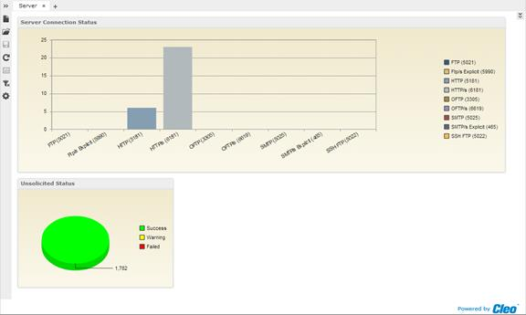

| Cleo Dashboards and Cleo System Monitor / Cleo System Monitor | |
The Server Dashboard provides information related to the server functionality of currently selected VersaLex.

The Server Connection Status chart displays a list of the configured VersaLex server ports, the type of port, and a count of the number of connections on each port. If a port is configured but was unable to start listening on that port, then Not Listening will follow the port number.
If any port is listed as Not Listening, that is typically an indication of a port conflict. Otherwise, the number of connections can monitored against normal levels. Abnormally low or high numbers may indicate an issue internally, with trading partner(s), or with another third party trying to access the system.
Access the Server Connection History sub-report by clicking on a bar or a bar label.
The Server Connection History report displays the number of connections active on each port over time. By default, it will show the last 60 minutes of history. Limit the history displayed to one or more ports by selecting them in the Protocol (Port) filter. Use the parameter control box to change the Start date/time of the chart and the number of Minutes displayed. Use the zoom slider at the bottom to zoom in closer to a specific time. Hovering the cursor over a specific data point on the chart will display information about that data point.
The Unsolicited Status chart displays a count of the successes, warnings, and failures that have occurred in the past 60 minutes. These are counts related to unsolicited transfers that have occurred on the server ports.
A growing red section of the pie chart indicates a current problem in the area of unsolicited transfers.
Access the Unsolicited Status History sub-report by clicking on the pie chart.
The Unsolicited Status History report displays the number of Successes, Warnings, and Failures that have occurred on server ports over time. By default, it will show the last 60 minutes of history. Use the parameter control box to change the Start date/time of the chart and the number of Minutes displayed. Use the zoom slider at the bottom to zoom in closer to a specific time. Hovering the cursor over a specific data point on the chart will display information about that data point.